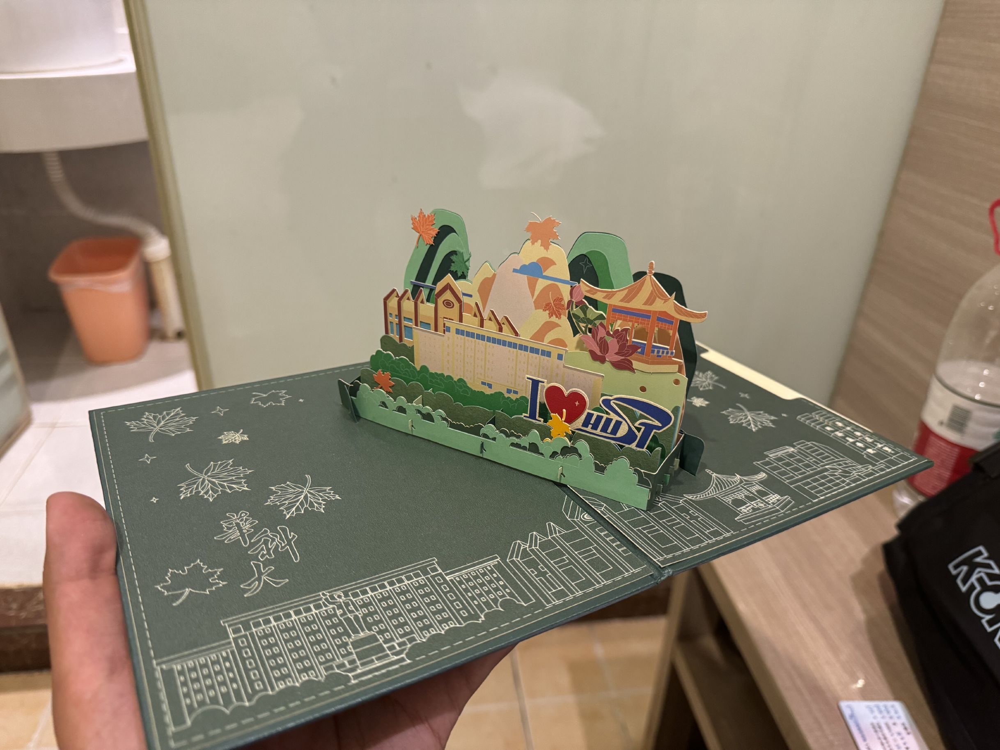

TNTの百校计划
华中科技大学
东湖是我家，我爸爱我妈
喻家山什么鸟地方
我终于明白，在华科大学了计算机，这辈子也就这样了
- 游览时间：2024年10月4日
- 拿到的周边：华科大立体贺卡

华中科技大学，简称华科大或华中大，英文Huazhong University of Science and Technology，即HUST。坐落于湖北省武汉市洪山区的东湖以南。
华中科技大学参与了众多计划，是985/211/双一流，可惜不知为何一直惨遭世人冷落。
华中科技大学（以下称“华科大”）占地约7000余亩，整体呈长方形结构，大体分为东西两区。西区是原华中理工大学，东区则是原武汉城市建设学院，后二者合并为华中科技大学。正因如此，在东西区交界处，有一个很长的斜坡，因其上坡长度长，校内学生称“绝望坡”。
华科大西区分块，生活条件稍好，校史馆、主图书馆等重要建筑落于此。东区则稍逊色，但地界开阔，景色较西区更为优美。
醉晚亭坐落在西区校史馆附近，亭子在湖中央，被一片荷花包围。给人一种很清新的印象
看到在陌生的遥远武汉建起来的湖中小亭，我总要一字不变地重复同样的话：“啊！要是浙大在启真湖建个亭子，该有多好呀！”
西区有紫菘学生公寓及沁园，其中紫菘是天花板，基本拥有了最好的宿舍条件。紫菘的宿舍楼门口都贴着本楼中住宿的学生专业，有一种分片划区的感觉。至于沁园，作为计算机同胞，我是非常同情他们的。
小A在华科大读计科，今天又是满课的一天。晚上十点半，小A拖着疲惫的身体从主图书馆回到了沁园寝室，连澡也不洗就躺到了床上，迷迷糊糊的要睡过去。半梦半醒间，小A感觉到脚有点冷，于是小A扯了扯被子，但盖住脚却盖不住肚子，盖住肚子却盖不住脚。小A觉得是被子横着盖导致的，换了一边之后却还像刚才一样只能盖一头。经过几次翻动，小A终于明白，在华科大学了计算机，这被子也就这样了。
华科大食堂是我吃过的所有食堂中最喜欢的一个。椒麻巴沙鱼只要16一份，久居杭州吃了一个多月“杭州辣”的我吃完这份巴沙鱼真的感动。
教学楼只转了东九楼，虽然假期，但自习的人很多。关键是每层的观景台都能看到东九附近的大水池，非常的不错啊（赞许）
韵苑宿舍整体不错（山景房），缺点是干湿不分离，这一点我是非常难接受的，一想到有人洗完澡之后我要顶着热气和满地的水在那蹲着上厕所就难受。希望华科大能早点给学生宿舍安隔板。
总结：华科大就一平价饭店（x）
华科大吐槽：
- 浙大校训是“求是创新”，华科大校训是“明德厚学，求是创新”，所以浙大是华科大的子集
- 学习四年 顶个球
欢迎在discuz上进行讨论！